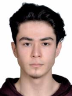

WEB SITE DENEME 1

About Me
I am currently a second-year student in Computer Engineering at Karabuk University.
I am a responsible engineering candidate, prone to teamwork and open to self-improvement.
Languages
Expertise
- Management Skills
- Creativity
- Critical Thinking
- Leadership
Education
- Karabuk University - Computer Engineering (2022-2027)
- Yahya Kemal Beyatli Anatolian High School (2015-2019)
My Hobbies
Experience